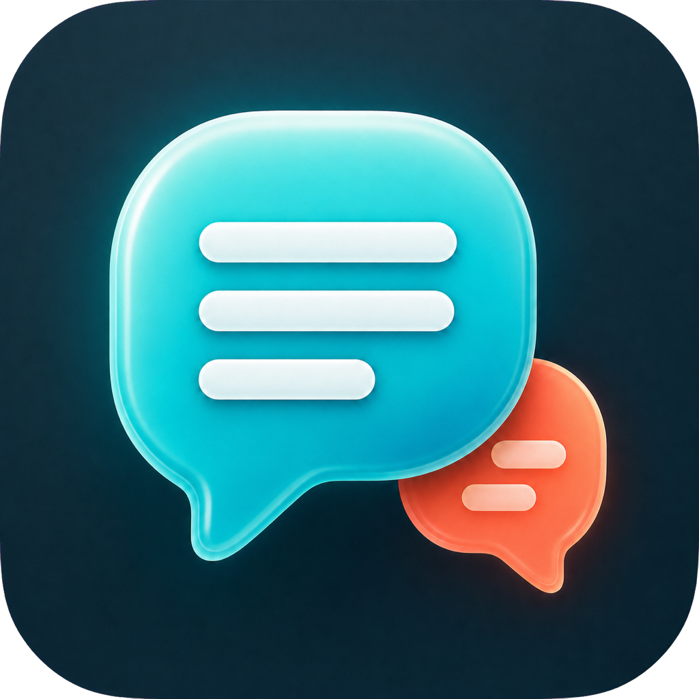

Floating bilingual subtitles
Translations sit above full-screen apps and Spaces, with source text available underneath when you want it.

Glossa DownloadNative macOS subtitle utility
Live captions from your Mac audio, privately translated into the language you choose.
System Audio
Bangla · বাংলা
The translation appears while audio keeps playing.
La traduction apparait pendant que l'audio continue.
Glossa stays out of the way until speech needs to become readable.
Translations sit above full-screen apps and Spaces, with source text available underneath when you want it.
Capture audio playing on your Mac through ScreenCaptureKit, with microphone fallback when needed.
WhisperKit identifies the spoken language locally before Glossa translates into your selected target.
The menu-bar bird opens a compact control surface for listening, overlays, capture mode, and recent captions.
Audio frames are processed in memory and never saved by Glossa. Apple Translation and WhisperKit keep the default path local. If you configure LibreTranslate, choose a local endpoint to keep fallback translation on your own machine.
The current build is ad-hoc signed for free GitHub distribution. Open it once with Control-click > Open.